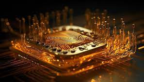
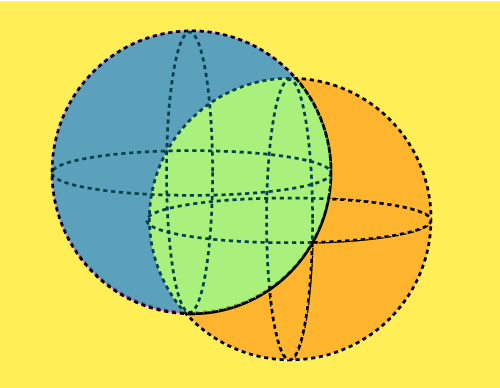
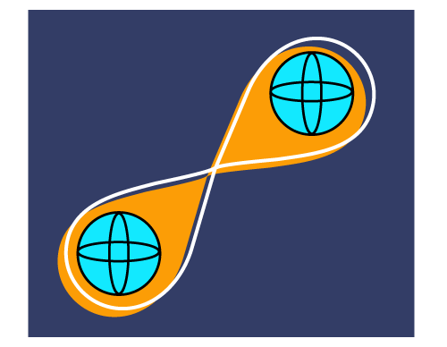
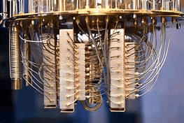

SVREC Technologies
SVREC TechnologiesWhat is Quantum Computing
Quantum Computing is the process of using quantum-mechanics for solving complex and massive operations quickly and efficiently. As classical computers are used for performing classical computations, similarly, a Quantum computer is used for performing Quantum computations. Quantum Computations are too complex to solve that it becomes almost impossible to solve them with classical computers. The word 'Quantum' is derived from the concept of Quantum Mechanics in Physics that describes the physical properties of the nature of electrons and photons. Quantum is the fundamental framework for deeply describing and understanding nature. Thus, it is the reason that quantum calculations deal with complexity. Quantum Computing is a subfield of Quantum Information Science. It describes the best way of dealing with a complicated computation. Quantum-mechanics is based on the phenomena of superposition and entanglement, which are used to perform the quantum computations.
For performing Quantum calculations, a Quantum Computer is used that is dissimilar to a classical computer. Although the concept of quantum computing came earlier, it didn't gain much popularity then.
Superposition and Entanglement
A Quantum deals with the smallest particles found in nature, i.e., electrons and photons. These three particles are known as Quantum particles. In this, superposition defines the ability of a quantum system to be present in multiple states (one or more) at the same time.
For example, a time machine in which a person can be present at one or more places at the same time, or we can say something that is present up, down, here and there at the same time. It is known as superposition.
Entanglement defines a very strong correlation between the quantum particles. These particles are so strongly linked that even if we place one particle at one end of the universe and one at the other end, both of them dance instantaneously.
Einstein describes entanglement as 'Spooky action at a distance'. Thus, entanglement describes the strong bond between the particles where distance does not matter.
Quantum Computer

A Quantum Computer is a device that is used for performing quantum calculations, which are highly complex in nature. It stores data in the form of Qubits. Qubits are also known as Quantum Bits. A Quantum Computer can simulate those problems or operations that a classical computer (that we currently use) cannot do. Even a quantum computer is capable of solving computational problems faster than a normal computer.
For example, it is easy to get the product of (500 * 187625) through a classical computer, but it is easy and quick to get the same result through a quantum computer. A classical computer will take approximately 5 seconds to get the result, whereas a quantum computer will take 0.005 seconds to get the result.
Currently, researchers are working with Quantum computers in the field of cybersecurity to break codes and encrypt electronic communications to explore better cybersecurity and protected data.
What are Quantum Bits
Quantum Bits or Qbits are the storage unit of Quantum Computers. All the information is stored in the form of qubits in a quantum computer. Quantum bits are the subatomic particles that are composed of electrons or photons. It is difficult to generate and manage Qubits, and it is a challenging task for scientists who are working in this field. These are the qubits that carry the property of superposition and entanglement. It means qubits are able to show various combinations of 1 and 0 at the same time. Thus, it is superposition. Researches make use of microwave beams or lasers for manipulating qubits. The final result of a computation immediately collapses to a quantum state of 1 or 0. It is the entanglement in which two members of a pair are present in a single quantum state. When two qubits of a pair are placed at a far distance, and if the state of one qubit changes, the state of the other will instantaneously change in a predictable manner. A connected group of quantum bits or qubits has much more power than the same binary digit number.
History of Quantum Computing
In the early 1980s, Paul Benioff(a physicist) proposed a quantum mechanical model of the Turing Machine. Since then, the concept of Quantum Computing came into existence. Later on, it was suggested that a quantum computer could simulate those things that a classical computer cannot. The suggestion was given by Richard Feynman and Yuri Manin. Peter Shor developed a quantum algorithm in 1994 for factoring the integers. The algorithm was strong enough to decrypt RSA-encrypted communications. More research is still going on in the field of Quantum Computing. On 23 October 2019, Google AI, in partnership with NASA (National Aeronautics and Space Administration), US, published a paper in which it was claimed that they had achieved Quantum Supremacy. Although some of them have disputed this claim, it is still a significant milestone in history.
Applications of Quantum Computing
There are the following applications of Quantum Computing:
Cybersecurity:
Personal information is stored in computers in the current era of digitization. So, we need a very strong system of cybersecurity to protect data from stealing. Classical computers are good enough for cybersecurity, but the vulnerable threats and attacks weaken it. Scientists are working with quantum computers in this field. It is also found that it is possible to develop several techniques to deal with such cybersecurity threats via machine learning.
Cryptography
is also a field of security where quantum computers are helping to develop encryption methods to deliver the packets onto the network safely. Such creation of encryption methods is known as Quantum Cryptography.
Weather Forecasting:
Sometimes, the process of analyzing becomes too long to forecast the weather using classical computers. On the other hand, Quantum Computers have enhanced power to analyze, recognize the patterns, and forecast the weather in a short period and with better accuracy. Even quantum systems are able to predict more detailed climate models with perfect timings.
AI and Machine Learning:
AI has become an emerging area of digitization. Many tools, apps, and features have been developed via AI and ML. As the days passing by, numerous applications are being developed. As a result, it has challenged the classical systems to match up accuracy and speed. But, Quantum computers can help to process such complex problems in less time for which a classical computer will take hundreds of years to solve those problems.
Drug Design and Development:
Drug designing and development is a typical job to be done. It is because the development of drugs is based on trial and error method, which is expensive as well as risky tasks. It is also a challenging task for quantum computers too. It is the researcher's hope and belief that quantum computing can become an effective way of knowing the drugs and their reactions over human beings. The day when quantum computing will successfully become capable of drug development, it will save a lot of time and money for drug industries. Also, more drug discoveries could be made with better results for the pharmaceutical industries.
Finance Marketing:
A finance industry can survive in the market only if it provides fruitful results to its customers. Such industries need unique and effective strategies to get growth. Although in conventional computers, the technique of Monte Carlo simulations is being used, in turn, it consumes a lot of time on the computer. However, if such complex calculations are performed by a quantum system, it will improve the quality of solutions and decrease development time.
Computational Chemistry:
The superposition and entanglement properties of a quantum computer may provide superpowers to machines for successfully mapping the molecules. As a result, it opens several opportunities in the field of pharmaceuticals research. More massive problems that a quantum computer can handle include creating room-temperature superconductor, creating ammonia-based fertilizer, creating solid-state batteries, and removing CO2 (carbon dioxide) for a better climate, etc. Quantum computing will be the most prominent in the field of computational chemistry.
Logistics Optimization:
Conventional Computing is being used for improving data analysis and robust modeling by enabling various industries to optimize their logistics and scheduling workflows associated with their supply-chain management. Such operating models continuously perform the calculations and recalculations for finding the optimal routes of fleet operations, air traffic control, and traffic management. Some of these operations can become complex and difficult for classical computers to solve. Thus, quantum computing can become an ideal computing solution to solve such complex problems. In quantum computing, two approaches are used, which are:
1. Quantum Annealing:
It is an advanced optimization technique that can surpass the classical computers.
2. Universal Quantum Computers:
It is capable of finding solutions for all types of computational problems. But, such a type of quantum system will take time to be commercially available. Researchers are hopefully working to enhance the system,